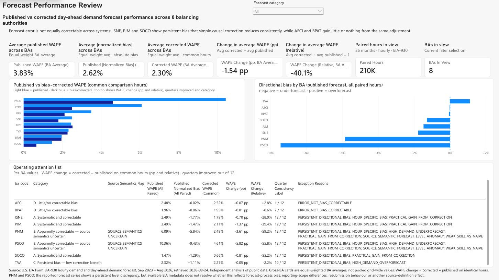

Forecast evaluation · Python · Power BI
Demand Forecast Performance & Operational Exceptions
How reliable is a published day-ahead demand forecast, where is it consistently wrong, and which of those errors can be corrected?
Open the Power BI report (PDF)Question
Balancing authorities publish an hourly day-ahead demand forecast alongside the demand that followed, through the U.S. Energy Information Administration's Form EIA-930. The aim is to understand how the published forecast behaves, not to build a better one.
The same review applies to any forecast a team relies on but did not build, such as a sales forecast, a demand plan or a budget.
Approach
The data cover 36 complete months, September 2023 to August 2026, for eight balancing authorities. They were chosen for reporting quality and diversity from the 50 with at least 95% complete data, before any error metric was computed.
| Measure | Use |
|---|---|
| WAPE | Primary cross-authority comparison: total absolute error over total demand |
| MAE (MW) | Error magnitude within one authority |
| Normalized bias | Direction of error; negative means underforecast |
Each forecast is compared with a seasonal-naive benchmark, the same hour one week earlier, on the same set of hours.
Bias correction
The corrected forecast adds the average recent error for the same authority and hour, taken from the four weeks before the forecast day and leaving out the day immediately before. It uses only data that would have been available at the time.
Improvement is judged by year and by quarter, not from one overall figure.
Key finding
Forecast error was not equally correctable across systems. ISNE, PJM and SOCO showed persistent directional bias that the historical adjustment reduced in all 12 quarters. Persistent bias alone did not guarantee that result (see TVA below). Where the published forecast was already close to unbiased, the correction added nothing or made it slightly worse.
| Authority | WAPE | Relative change | Quarters improved |
|---|---|---|---|
| PJM | 3.49% → 2.11% | −39.4% | 12 / 12 |
| SOCO | 1.46% → 0.66% | −55.2% | 12 / 12 |
| ISNE | 2.49% → 1.79% | −28.0% | 12 / 12 |
| TVA | 2.32% → 2.27% | −2.2% | 10 / 12 |
| BPAT | 1.96% → 1.95% | −0.6% | 7 / 12 |
| AECI | 2.45% → 2.52% | +2.8% | 1 / 12 |
The published forecasts are already strong: for six of the eight authorities, they remove 61–86% of the seasonal-naive benchmark's error. What can be corrected is a stable directional bias, which overall WAPE alone would hide.
Where correction did not help
AECI and BPAT were already effectively unbiased, and the correction gave no real benefit (BPAT) or made WAPE slightly worse (AECI, 1 of 12 quarters improved). TVA is the counterexample: its bias was persistent, but the correction improved overall WAPE by only about 0.05 percentage points, even though it helped in 10 of 12 quarters.
An apparent PJM underforecast at peak hours was not reported. It shows up when peaks are picked by actual demand, which is only known afterwards, and disappears when they are picked by forecast demand.
Power BI report
A two-page report built in the Power BI Service. The semantic model loads the pipeline's extracts through Power Query, and the measures are written in DAX. The first page compares published and corrected performance across authorities and lists operating exceptions. The second shows a single authority's error by hour, quarter, benchmark and demand level.


The DAX measures match the Python results for all eight authorities.
PNM and PSCO
The report flags PNM and PSCO as source semantics uncertain. Their reported forecasts sit persistently below actual demand, by 5.8% and 9.4%, and the correction reduces that gap. But EIA's metadata does not show whether this is forecast bias or a difference in how the two series are defined, such as reporting scope or resubmissions.
Both are kept out of the headline finding until the source definitions are confirmed.
Limitations
EIA revises values in place, and forecast vintages and resubmissions are not observable. Authorities were selected on reporting quality, which may favour operationally mature systems; Texas and California are not represented. Seasonal statements rest on three annual cycles. No cost, reliability or operational impact is estimated.